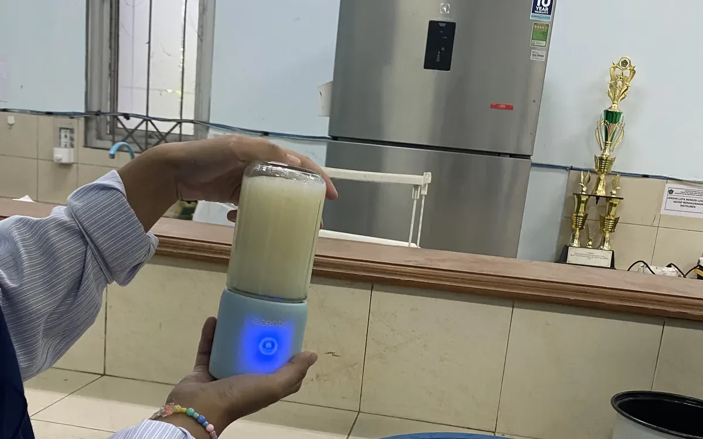
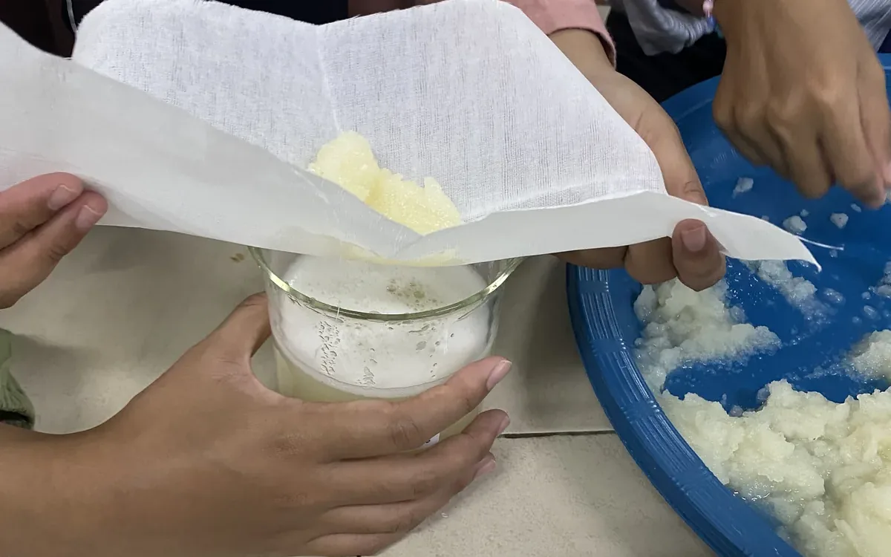
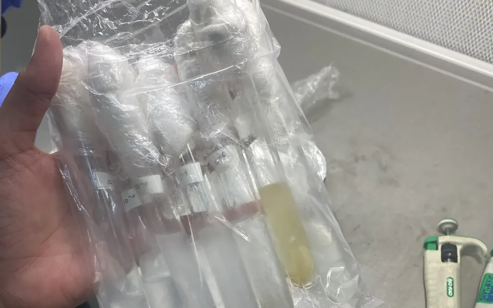
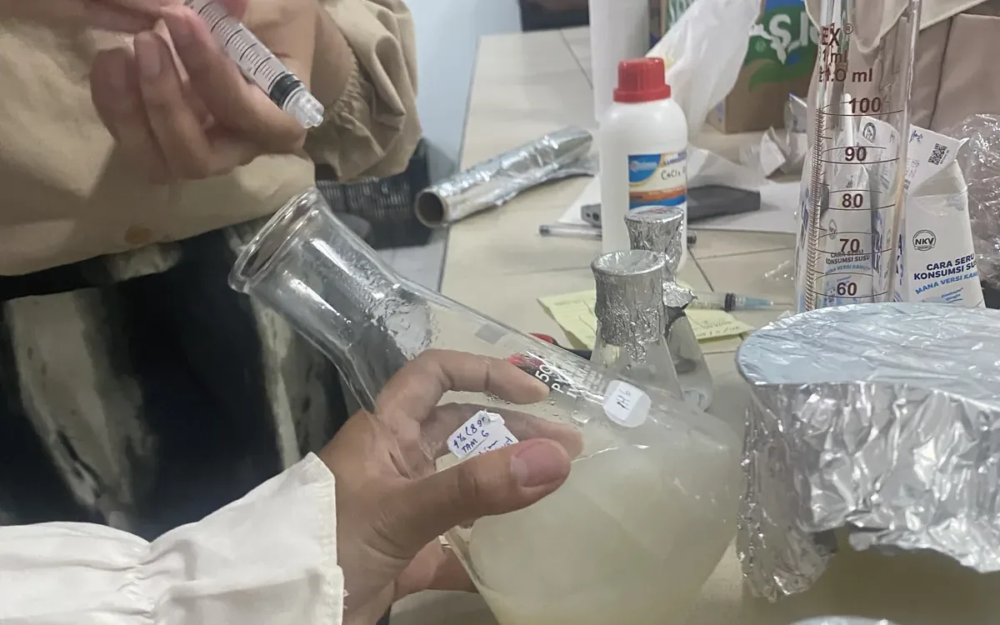
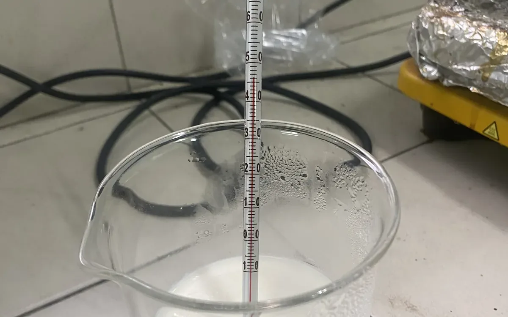
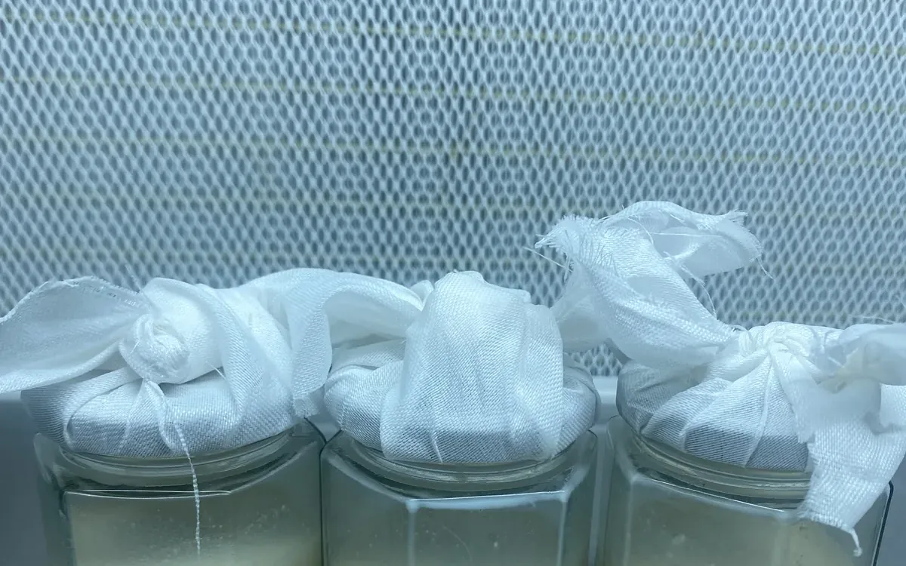

Latar & tujuan
Bakteri probiotik dalam yoghurt mudah kehilangan viabilitas selama penyimpanan akibat pH rendah, suhu, dan oksigen. Enkapsulasi sel dengan matriks hidrokoloid adalah pendekatan standar industri untuk menekan penurunan tersebut.
Penelitian ini memformulasikan matriks pelindung dari natrium alginat diperkuat sari bengkuang, lalu menguji pengaruhnya terhadap viabilitas Lactobacillus dan masa simpan yoghurt probiotik.
Metode
- Propagasi kultur — peremajaan isolat Lactobacillus pada medium pertumbuhan hingga fase logaritmik.
- Preparasi matriks — variasi konsentrasi natrium alginat dicampur dengan sari bengkuang sebagai bahan pengisi dan sumber nutrisi tambahan.
- Enkapsulasi — suspensi sel didorong ke larutan pengikat untuk membentuk kapsul, lalu dikeraskan dan dicuci.
- Aplikasi pada yoghurt — kapsul diinokulasikan ke basis yoghurt dan dibandingkan dengan sel bebas sebagai kontrol.
- Uji viabilitas — penghitungan sel hidup berkala dengan metode plate count selama masa penyimpanan.
- Shelf-life testing — pemantauan parameter produk sepanjang periode simpan untuk menentukan umur simpan efektif.
Hasil
Parameter yang diamati mencakup viabilitas sel probiotik (log CFU/mL), nilai pH, dan karakteristik organoleptik produk pada tiap interval pengamatan. Formulasi dengan matriks alginat–bengkuang menunjukkan ketahanan sel yang lebih baik dibanding sel bebas pada periode simpan yang sama, dengan pengaruh konsentrasi alginat terhadap kekuatan matriks dan pelepasan sel.
Galeri proses





